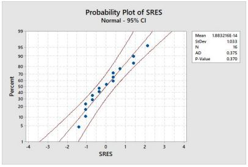

Hello, I'm Steve.
A Programmer, Engineer, Patent Agent & Musician


Again, I'm Steve. I'm an experienced engineer and developer, as well as a licensed patent agent (registration number 76,007). I've worked for a few different industries including vocational safety, powersports, transportation and heavy equipment. In addition to my agent license, I hold a Bachelor of Science Degree from Minnesota State University Mankato, as well as a Master of Science Mechanical Engineering degree from the University of St. Thomas. When I'm not working I enjoy cycling and playing my guitars!
One skill I possess is conducing CFD studies for air and particle flow. I've used this skill for my roles in the transportation and heavy equipment industries designing air intake systems. I've also done thermodynamic studies on turbojet engine components as part of my Master'degree. The programs that I've used to do this include Star CCM+ as well as Ansys.
One of my skills from graduate school is statistical analysis. I've used this ability to troubleshoot performance issues with airflow systems by evaluating sources of variation. I've also constructed a series of tools for engineering teams to predict chemical filter performance for hydrogen fuel cell applications. These were constructed from a series of multiple linear regression models.
Another area I'm well studied in is project management. I started this in graduate school and have used it professionally for years. This skillset includes budget, scope and timeline management, earned value management, and managing project charters and statements of work. Frequently I've combined my knowledge of statistics with post mortem project data to construct accurate timelines.
Another hobby that I've taken up is astrophotography. I specialize in deep space objects. Its a highly technical endeavor but I've gotten pretty good at it over a few short years of practice!
For fun I love performing live or just jamming in my studio office! I've been playing since I was ten years old!
Below I've provided links to my LinkedIn profile to see my capabilities in greater detail, I can be reached there. For content less work related I have also provided a link to my youtube channel, packed with some muscial works. I've also provided a link to send me a direct email.
CONTACT ME